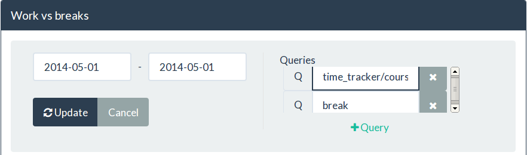

How I made my own time tracking tool in 1 day
I was always interested in how long it takes me to do stuff. Especially when it comes to programming. It's like sports: you measure how well you perform and next time you try to do it better. Otherwise there's no point of doing something, if you're not improving, right?
Recently I've been attending Machine Learning course. Study load was estimated 5-7 hours/week. But everytime I was doing the assignments I felt like I was spending at least twice more than the estimation. Then I decided I need to measure my activities.
There are lot's of time tracking tools out there: free, non-free, desktop, mobile, web based, etc. Most of them are really hard to work with. You have to open a web site or a dialog box, fill forms, press buttons, etc. It requires me to use my mouse and do bunch of steps that decreases my performance and interrupts main tasks. Eventually the motivation to track my time perishes.
The problem
Best case scenario would be if my computer could automatically monitor my activities. Well unfortunately, most of the time it's too hard to interpret human and computer interaction as a higher level task. E.g. computers might not easily understand that browsing facebook means that I'm still doing my job - advertising my product. That's why I have to explicitly tell which tasks I'm working on.
My goal was to reduce the burden of this action - task tracking. I would like to put as less effort as possible.
Solution
To achieve my goals I have implemented my own time tracking tool which integrates into my operating systems environment. It's available on github. Where you can find the description how to setup it on your Awesome window manager.
Currently I'm using Debian OS and Awesome window manager on top of it. Awesome is litteraly awesome. It allows me to forget that I ever needed a mouse :).
First attempt
Starting new task is easy. I hit ctrl+windows_key+a (a stands for activity), and I get a prompt to enter the new task I'm working on:
Once i hit ENTER the task is marked as started. When I hit ctrl+windows_key+s the task is stopped. Once task is stopped it is saved to text file (CSV format). So later I can import my tasks to Excel and plot some charts.
Second shot
Everything is simple and working pretty well. Except for task reports. I hate to do Excel imports or read the task reports from text file. So eventually I used Qmonix monitoring and analytics platform. It provides me:
server that collects my tasks;
client side libraries to send task data to server;
and dashboard to visualise and overview my tasks.
To be honest, it took me 33 minutes to integrate Qmonix to my time tracker. And after that I was able to get some nice charts without breaking a sweat.
How did I do it?
First of all I downloaded Qmonix server from http://qmonix.com. The zip archive has qmonix-qemu.sh script that runs the server:
$ ./qmonix-qemu.sh
After the server started I was able to see such window:
Then I grabbed Qmonix Lua library. Because Awesome WM is configurable with Lua. Then I edited my awesome time tracker to send tasks to Qmonix server rather than save them to text file. That's it :) - I was able to overview the time I spent on my tasks in Web browser (http://localhost:8337/dashboard/index.html).
One nice thing is that now I'm able to host the server and send my task time data from any place: home and work.
Example
Ok, let's come back to the machine learning course. I used this awesome time tracker to see how much time it actually took me to do my course work. First of all I separated three different tasks:
wathing videos,
answering quiz questions,
and doing programming assignments.
Then I tracked each activity separately:
Time report review
It's time to take a look how much time I spent on machine learning during a single week. Let's revise that estimated course load was 5-7 hours/week, but I felt like I was spending way more time.
Let's see the total time spent on machine learning. I will create column chart that displays time spent on machine learning daily:
As a result I get such chart:
What it says it, that on march 1st I spent 10 000 seconds studying machine learning. Which is about 2.7 hours. So it's twice better than the estimated time :)
Now I wanted to see how much time each subtask (videos, quiz, programming) took separately:
Most of the time I spent on watching videos. Although, I expected to see that programming tasks are the most time consuming.
Also I measured my breaks. Which later I compared to the machine learning course work:
Now it was obvious why it felt like it was taking too much time. I spent more time on breaks than working on my tasks.
To sum up
Obviously I need to work on my concentration :).
Comments